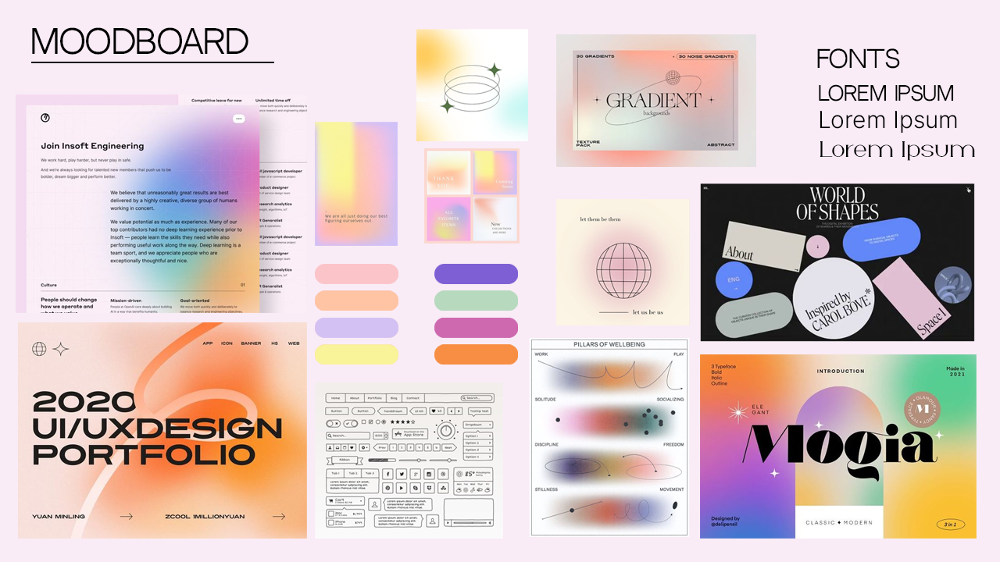

Here are some web design inspirations. I will be creating a website that is similar to a clothing website so I included the H&M website in here.
As for the others I really like gradient and minimalistic look, as well as the interactions on the websites themselves.
